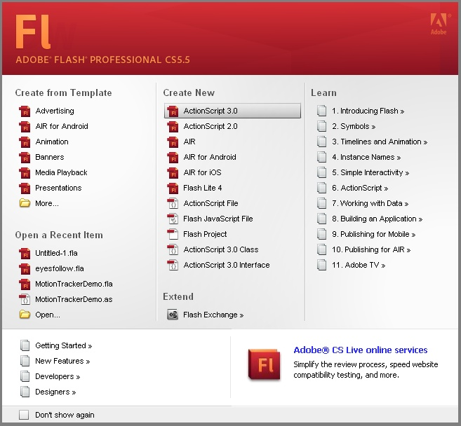

Данный сборник предназначен студентам по направлению «Инноватика» для выполнения практических работ и составлен в соответствии со стандартом и рабочей программой по дисциплине «Программные средства web-дизайна».
В издании определены содержание, объем и порядок выполнения практических работ по данной дисциплине за 4 (по новому стандарту – 6) семестр, а также требования к результатам работы студентов. В сборнике представлены краткие теоретические сведения по каждой теме, что предполагает обязательное посещение лекций и изучение соответствующей литературы.
Основная цель выполнения практических работ – освоить базовые навыки создания сайта инновационного проекта или технологии и изучить основные аспекты web-дизайна.
Цель настоящего сборника – методическое обеспечение организации и управления самостоятельной работой студентов при практических занятиях.
Данный сборник описания практических работ обеспечивает:
После выполнения практической работы студент должен представить в письменном виде отчет о проделанной работе, в который входят…..
В сборнике есть библиографический список, позволяющий самостоятельно изучить данный материал по другим источникам, а также список вопросов и тесты для подготовки к зачету.
Перед выполнением каждой практической работы студент должен изучить теоретический материал.
Практические работы выполняются в компьютерных классах академии и должны быть продемонстрированы преподавателю.
По результатам выполнения практической работы оформляется отчет (редактор Word, формат А4, двухсторонняя печать).
Титульный лист отчета необходимо оформить по стандартной форме (приложение 1).
Отчет должен содержать следующие компоненты: – постановка задачи….
Отчет для практической работы составляется в одном экземпляре на 2 студентов и подлежит защите. Для защиты практической работы студент должен подготовить ответы на контрольные вопросы, которые находятся в конце каждой работы.
Предполагается, что студенты смогут изучать практическое создание сайтов начального уровня и начать редактировать и править их самостоятельно. Язык разметки текстовых потоков (HTML) – считается простым, по сравнению с другими языками программирования, но изучение большого количества тегов (tags) требует времени.
Время выполнения – 4 часа.
Цель работы: изучение и освоение принципов разработки сайта.
Глобальная сеть состоит из сайтов доступных для общего пользования, закрытых приватных сайтов, корпоративных и локальных (доступных на уровне какой-либо локальной сети).
Сайт (веб-сайт англ. website, от web – паутина, и site – «место») – это место во всемирной сети (интернете), которое имеет свой адрес, собственного хозяина и состоит из отдельных web-страниц, которые мы видим как одно целое.
Все странички каждого сайта объединяются одним корневым адресом (то, что мы набираем в адресной строке браузера), тематикой, системой и дизайном. Каждая страница web – сайта это документ, который структура которого описана при помощи языка разметки (X) HTML. Страницы сайтов могут быть как простыми наборами информации – тексты и картинки, так и сложными, с огромным количеством функций, которые добавляют интерактивности.
У каждого сайта свои цели и задачи, которые реализуются благодаря возможностям и преимуществам интернет-технологий.
Сайты можно условно классифицировать по:
Создание сайта начинается с концепции и структуры - т.е. с постановки задачи в соответствии с целями сайта. И уже на основе этой информации необходимо подбирать нужные материалы. Очень важно представить всю информацию удобным и понятным образом, чтобы то, что знаете вы, узнал бы и пользователь сайта.
Очень важна - информационная структура сайта. Продуманная информационная структура гарантирует, что пользователи потратят меньше времени на поиск нужной информации, и никогда не скажут, что они чего-то не нашли. При хорошей структуре они всегда обнаружат, что один документ связан ссылками с другими документами по той же теме. Они всегда смогут легко переключаться с поиска документов на их просмотр и обратно. Они лучше будут понимать, какую информацию сайт может им предложить.
Содержание сайта – это:
Время выполнения – 4 часа.
Цель работы: освоение методики создания интерактивных элементов сайта с использованием технологии Flash.
Для выполнения практической работы № 7 необходимо изучить принципы создания элементов web-страниц с применением технологии Flash. Научиться применять анимацию движения. Научиться применять анимацию формы. Научиться вставлять Flash объекты на HTML страницу.
Используем технологию Flash для анимирования и наложения эффектов на буквы логотипа.
1. Создание текста логотипа
В Adobe Flash создадим пустой документ ActionScript 3.0 (рисунок 33).
